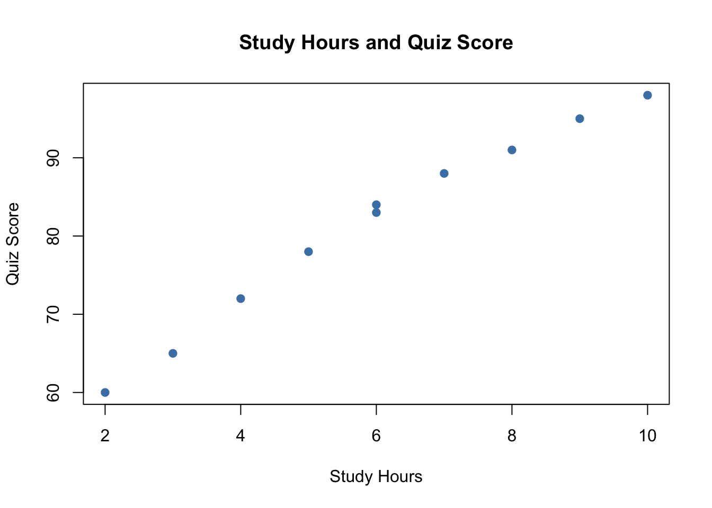
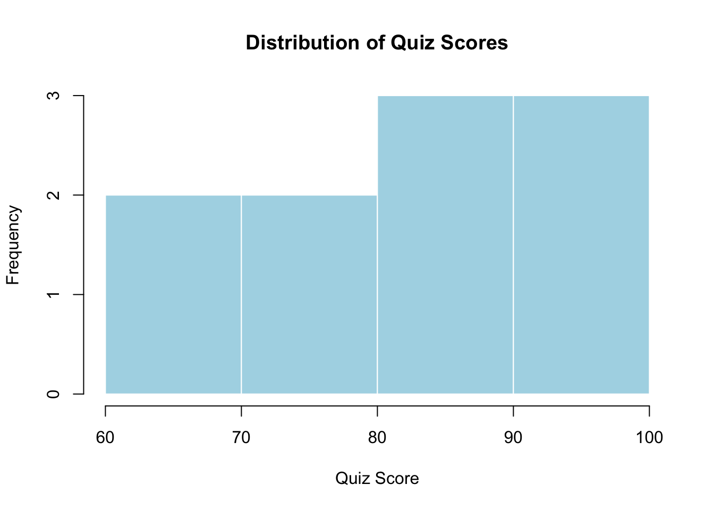

data <- read.csv("mydata.csv")8. Getting Results
Now that your data is in R, you can start getting results.
In this section, we will calculate:
- A mean
- A frequency table
- A simple plot
First, import the data again:
Calculating a Mean
The mean is the average.
Let’s calculate the average quiz score:
mean(data$quiz_score)[1] 81.4The $ symbol means:
Use a column from this dataset.
So:
data$quiz_scoremeans:
The
quiz_scorecolumn inside the dataset calleddata.
Interpreting the Mean
If R gives you a number such as:
[1] 82.4you can write:
The average quiz score is 82.4.
TipTip
Always explain results in words. Do not only show the code output.
Calculating Another Mean
You can also calculate the average number of study hours:
mean(data$study_hours)[1] 6A sentence for this result might be:
Students studied an average of about 6 hours.
Creating a Frequency Table
A frequency table counts how many times each category appears.
Let’s count the number of students in each major:
table(data$major)
Biology Business Psychology
3 4 3 This tells us how many students are listed for each major.
Interpreting a Frequency Table
If R shows something like:
Biology Business Psychology
3 4 3you can write:
There are 3 Biology students, 4 Business students, and 3 Psychology students in the dataset.
Another Frequency Table
We can count attendance:
table(data$attendance)
Absent Present
2 8 This shows how many students were marked as Present or Absent.
Creating a Simple Plot
A plot helps us see patterns.
Let’s make a scatterplot of study hours and quiz scores:
plot(
data$study_hours,
data$quiz_score,
main = "Study Hours and Quiz Score",
xlab = "Study Hours",
ylab = "Quiz Score",
pch = 19,
col = "steelblue"
)
This graph shows whether students who studied more hours tended to have higher quiz scores.
Another Simple Plot
We can also make a histogram of quiz scores:
hist(
data$quiz_score,
main = "Distribution of Quiz Scores",
xlab = "Quiz Score",
col = "lightblue",
border = "white"
)
A histogram shows how values are spread out.
Try It Yourself
NotePractice
Use the dataset to answer these questions:
- What is the average number of study hours?
- How many students are in each attendance group?
- Make a plot of sleep hours and quiz score.
Use these commands as a starting point:
mean(data$study_hours)
table(data$attendance)
plot(
data$sleep_hours,
data$quiz_score,
main = "Sleep Hours and Quiz Score",
xlab = "Sleep Hours",
ylab = "Quiz Score"
)Practice: Write Your Results
NotePractice
After running your code, write one sentence for each result.
Example:
The average quiz score was 81.4.
Most students in this small dataset were present.
The scatterplot suggests that higher study hours may be related to higher quiz scores.
Writing Results in Sentences
Good results include both the number and an explanation.
Instead of only writing:
[1] 6.2write:
The average number of study hours was 6.2 hours.
Instead of only showing a plot, write:
The plot suggests that students who studied more hours tended to have higher quiz scores.
NoteReminder
Your goal is not only to run code. Your goal is to understand and explain what the results mean.
Check Your Understanding
Answer these questions:
- What does
mean()calculate? - What does
table()create? - What does the
$symbol do? - Why should you explain results in words?
Summary
In this section, you learned how to:
- Calculate a mean.
- Create a frequency table.
- Make a simple scatterplot.
- Make a histogram.
- Explain results in plain language.